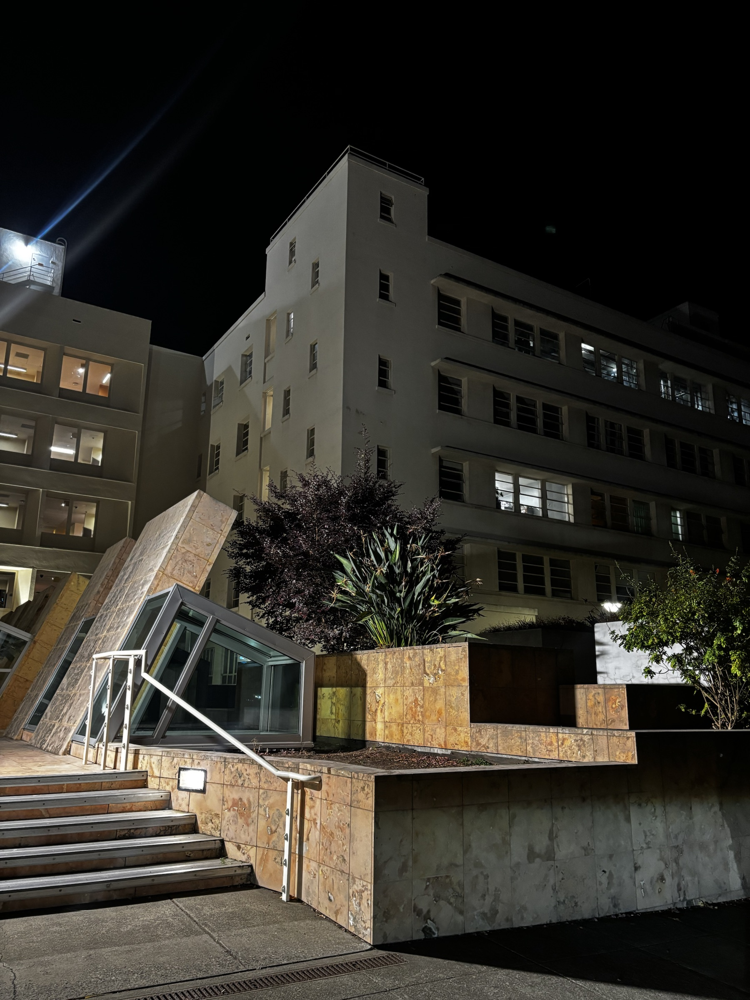
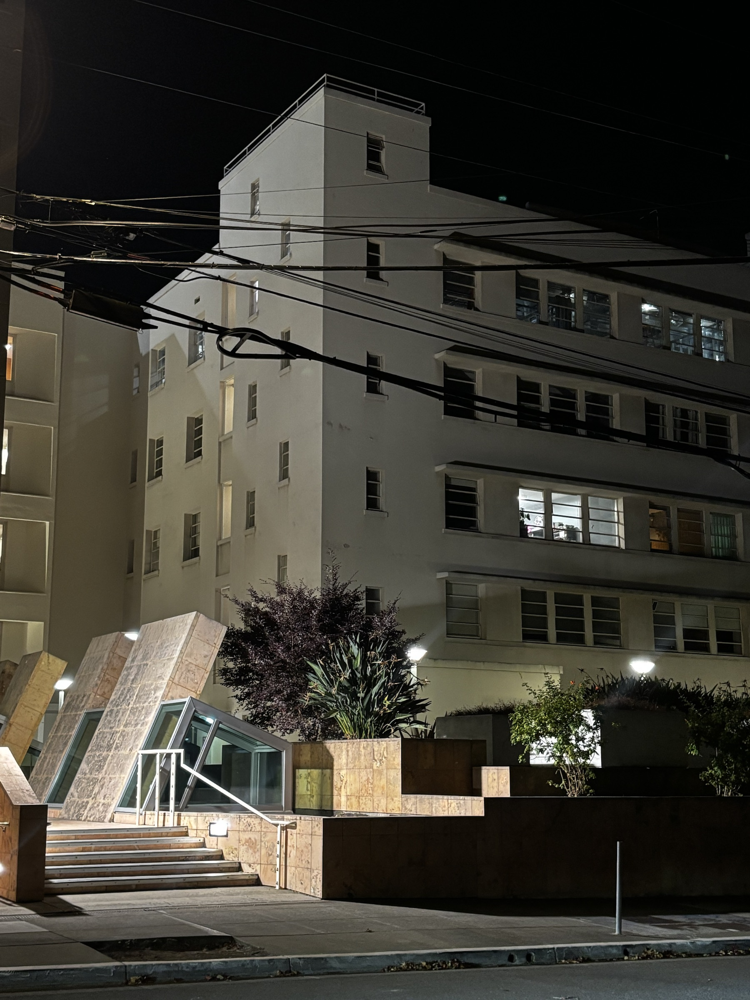
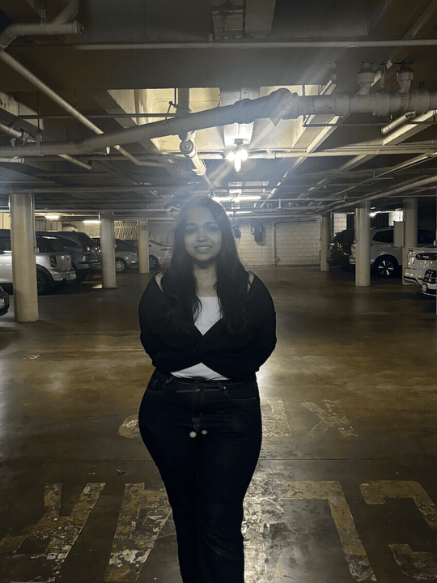

CS 180 / 280A · Project 00
Through
the lens.
An exploration of how camera position and focal length change the way we see faces, spaces, and depth.
View the studyStudy 01 · Portrait
Same face.
Different distance.
Moving the camera back and zooming in preserves the subject’s size, but changes the relative scale of near and far facial features.
Add portrait-close.jpg
Up close
Wide field of view · short camera distance
Add portrait-zoom.jpg
Stepped back
Longer focal length · greater camera distance
Study 02 · Architecture
Space,
compressed.
Two nearly matched compositions reveal how viewpoint—not zoom alone—controls the apparent depth of a scene.

Add architecture-wide.jpg

Add architecture-zoom.jpg
“Zoom frames the scene. Position shapes it.”
From farther away, the distance from the camera to foreground and background objects is proportionally more alike, so the gap between them appears compressed. Walking forward exaggerates that gap and restores a stronger sense of depth.
Study 03 · Motion
The dolly
zoom.
The camera retreats as the lens zooms in. The subject holds steady while the world around it seems to stretch.

Add dolly-zoom.gif
move backzoom in
How it works
At every step, I increased the focal length as I moved backward, keeping the subject at roughly the same size. The changing camera position alters the perspective, while the changing zoom restores the framing—creating the signature “Vertigo” effect.